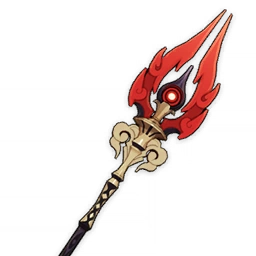
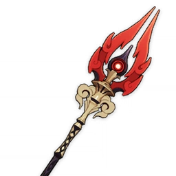
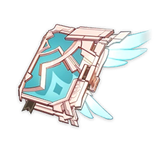
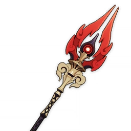
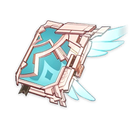
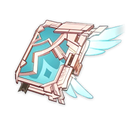
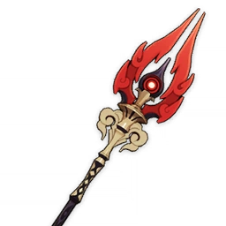
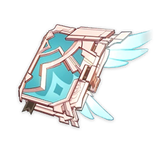

 





Ataque %
Una gran espada que fue usada por el Lobo de los Caballeros de Favonius. Originariamente, era solo una pesada lámina de hierro que le regaló el herrero de la ciudad. Sin embargo, se convirtió en una gran espada al serle otorgado poderes legendarios por su amistad con los lobos.
| Nivel | Ataque Base | Atributo Sec. |
|---|---|---|
| 20 | 122/153 | 19.1% |
| 40 | 235/266 | 27.8% |
| 50 | 308/340 | 32.2% |
| 60 | 382/414 | 36.5% |
| 70 | 457/488 | 40.9% |
| 80 | 532/563 | 45.3% |
| 90 | 608 | 49.6% |
Aumenta el ATQ en un 20%. Al atacar a enemigos con menos del 30% de su Vida, aumenta el ATQ de todos los miembros del equipo en un 40% durante 12 s. Este efecto solo puede ocurrir una vez cada 30 s.